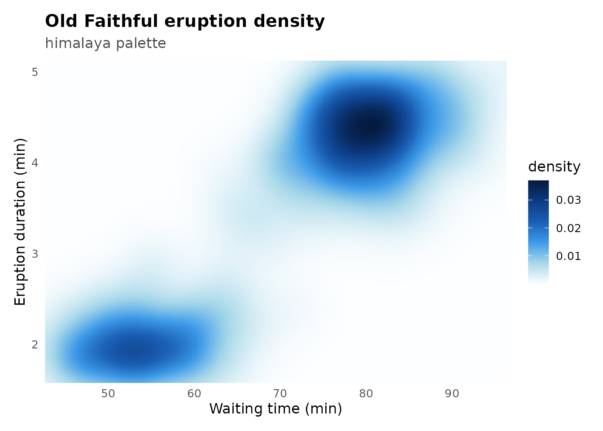
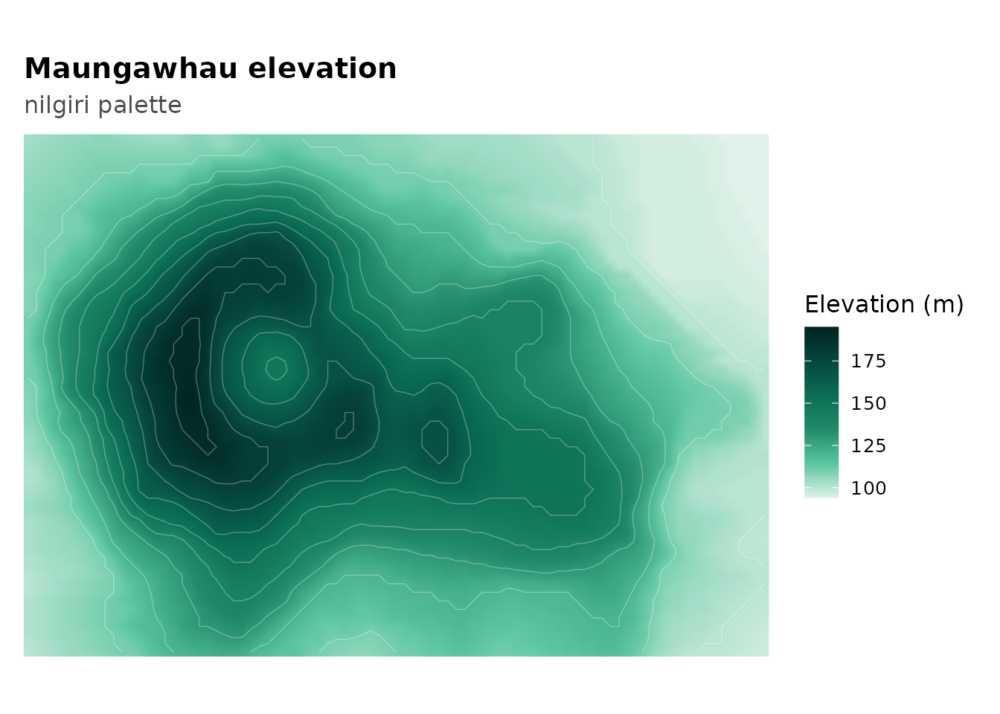
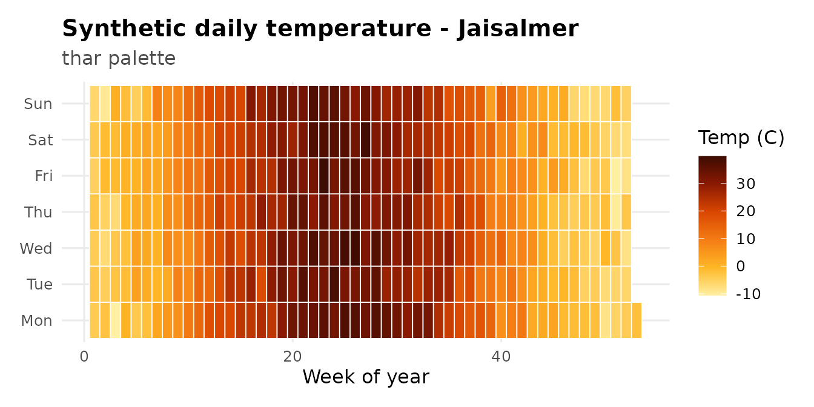
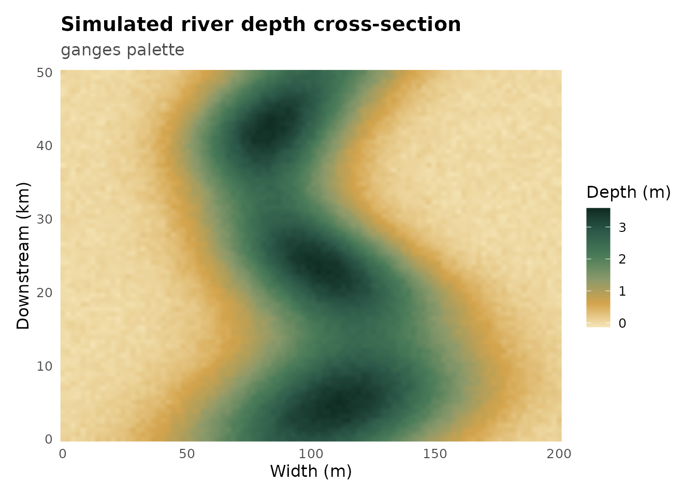
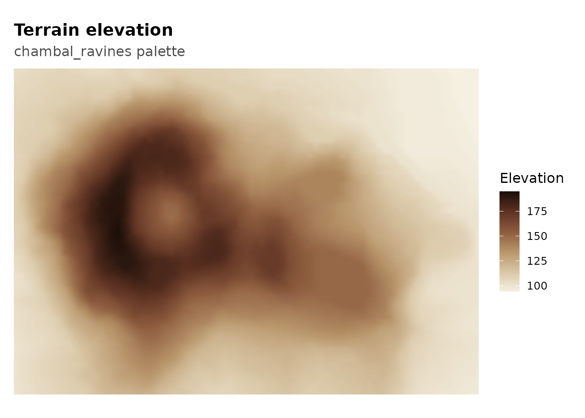
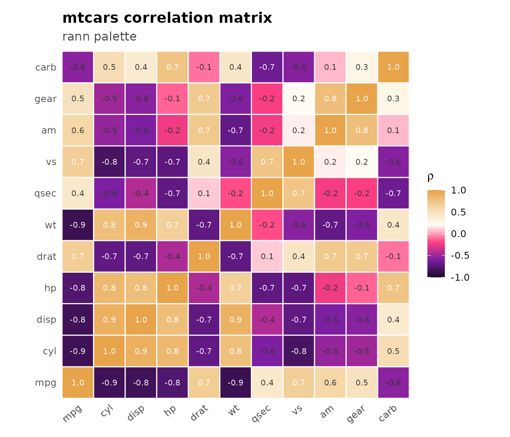
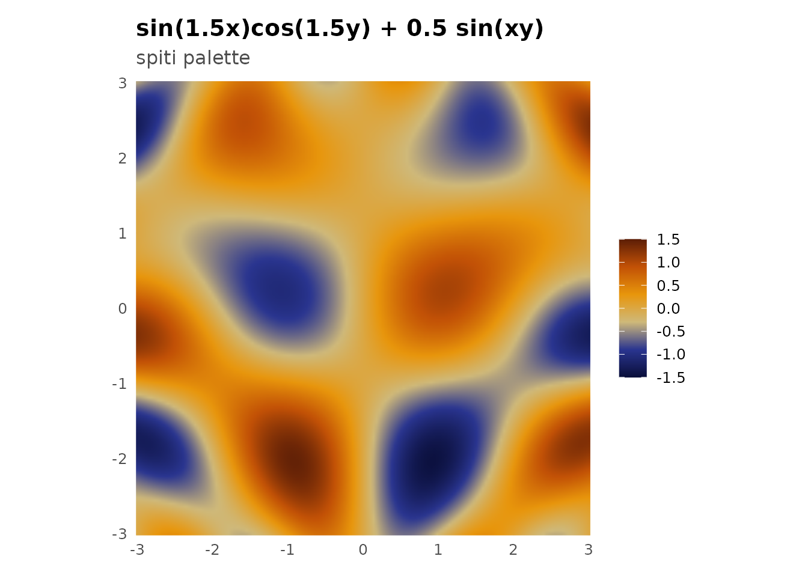
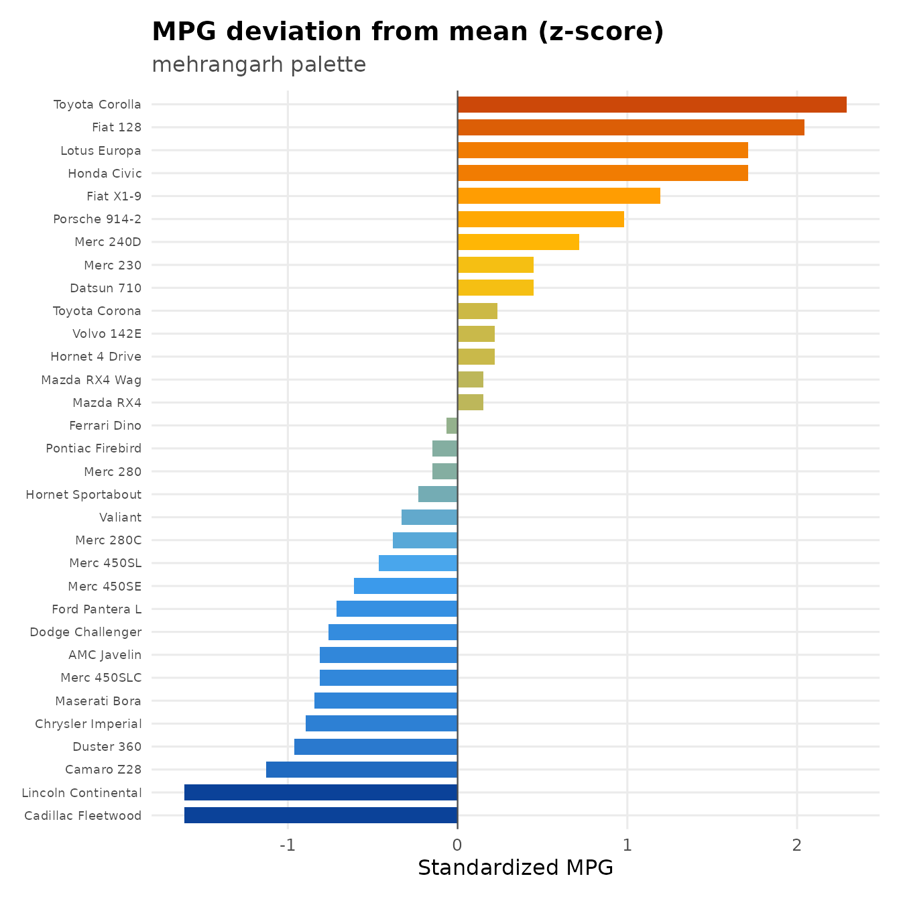
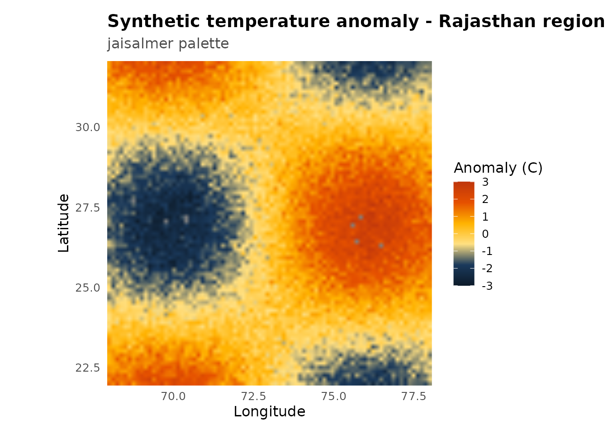
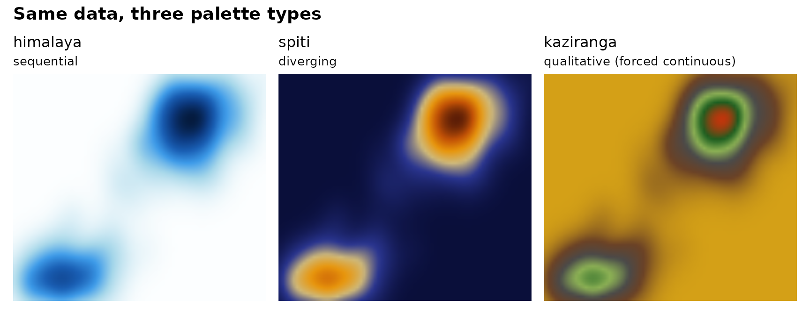

Recipes: sequential and diverging palettes
Source:vignettes/sequential-diverging.Rmd
sequential-diverging.RmdSequential palettes map low-to-high. Diverging palettes have a meaningful midpoint and push outward in two directions. This article walks through common plot types for both.
Heatmap - himalaya
The classic use case for a sequential palette. himalaya
runs from near-white through glacial blue to deep navy, which reads well
on both screen and print.
ggplot(faithfuld, aes(waiting, eruptions, fill = density)) +
geom_raster(interpolate = TRUE) +
scale_fill_prakriti("himalaya") +
coord_cartesian(expand = FALSE) +
labs(
title = "Old Faithful eruption density",
subtitle = "himalaya palette",
x = "Waiting time (min)", y = "Eruption duration (min)"
) +
theme_prak()
Filled contour - nilgiri
Contour lines on top of a raster. The white contours pop against
nilgiri’s dark greens without competing with the fill.
volcano_df <- expand.grid(x = seq_len(nrow(volcano)),
y = seq_len(ncol(volcano)))
volcano_df$z <- as.vector(volcano)
ggplot(volcano_df, aes(x, y, fill = z)) +
geom_raster(interpolate = TRUE) +
geom_contour(aes(z = z), color = "white", alpha = 0.3, linewidth = 0.25) +
scale_fill_prakriti("nilgiri") +
coord_equal(expand = FALSE) +
labs(
title = "Maungawhau elevation",
subtitle = "nilgiri palette",
x = NULL, y = NULL, fill = "Elevation (m)"
) +
theme_prak() +
theme(axis.text = element_blank(), panel.grid = element_blank())
#> Warning: The following aesthetics were dropped during statistical transformation: fill.
#> ℹ This can happen when ggplot fails to infer the correct grouping structure in
#> the data.
#> ℹ Did you forget to specify a `group` aesthetic or to convert a numerical
#> variable into a factor?
Calendar heatmap - thar
Day-of-year temperature as a calendar grid. thar goes
from golden to deep burnt orange - natural for temperature data.
set.seed(99)
n_days <- 365
ts_df <- data.frame(
day = 1:n_days,
temp = 15 + 20 * sin(2 * pi * (1:n_days - 80) / 365) +
rnorm(n_days, sd = 2.5)
)
ts_df$week <- (ts_df$day - 1) %/% 7 + 1
ts_df$wday <- factor((ts_df$day - 1) %% 7 + 1,
labels = c("Mon","Tue","Wed","Thu","Fri","Sat","Sun"))
ggplot(ts_df, aes(week, wday, fill = temp)) +
geom_tile(color = "white", linewidth = 0.3) +
scale_fill_prakriti("thar") +
labs(
title = "Synthetic daily temperature - Jaisalmer",
subtitle = "thar palette",
x = "Week of year", y = NULL, fill = "Temp (C)"
) +
theme_prak() +
theme(panel.grid = element_blank())
River depth cross-section - ganges
A simulated meandering river. ganges moves from silt
gold through monsoon green to deep aquatic tones.
set.seed(18)
river_df <- expand.grid(
dist = seq(0, 200, length.out = 100),
km = seq(0, 50, length.out = 80)
)
river_df$depth <- with(river_df, {
center <- 100 + 20 * sin(km / 8)
width <- 40 + 10 * cos(km / 12)
base <- exp(-((dist - center) / width)^2)
base * (3 + 0.5 * sin(km / 3)) + rnorm(nrow(river_df), sd = 0.05)
})
ggplot(river_df, aes(dist, km, fill = depth)) +
geom_raster(interpolate = TRUE) +
scale_fill_prakriti("ganges") +
coord_cartesian(expand = FALSE) +
labs(
title = "Simulated river depth cross-section",
subtitle = "ganges palette",
x = "Width (m)", y = "Downstream (km)", fill = "Depth (m)"
) +
theme_prak() +
theme(panel.grid = element_blank())
Terrain elevation - chambal_ravines
Warm neutral tones for topographic data. chambal_ravines
goes from bone white through khaki and terracotta to near-black - reads
like a real terrain map.
ggplot(volcano_df, aes(x, y, fill = z)) +
geom_raster(interpolate = TRUE) +
scale_fill_prakriti("chambal_ravines") +
coord_equal(expand = FALSE) +
labs(
title = "Terrain elevation",
subtitle = "chambal_ravines palette",
x = NULL, y = NULL, fill = "Elevation"
) +
theme_prak() +
theme(axis.text = element_blank(), panel.grid = element_blank())
Correlation matrix - rann
rann diverges from deep violet through flamingo pink to
white salt and warm gold. The neutral white midpoint makes
zero-correlation cells visually quiet.
cor_mat <- cor(mtcars)
cor_df <- as.data.frame(as.table(cor_mat))
names(cor_df) <- c("var1", "var2", "rho")
ggplot(cor_df, aes(var1, var2, fill = rho)) +
geom_tile(color = "white", linewidth = 0.5) +
geom_text(aes(label = sprintf("%.1f", rho)),
color = ifelse(abs(cor_df$rho) > 0.65, "white", "grey20"),
size = 2.8) +
scale_fill_prakriti("rann", limits = c(-1, 1)) +
coord_equal(expand = FALSE) +
labs(
title = "mtcars correlation matrix",
subtitle = "rann palette",
x = NULL, y = NULL, fill = expression(rho)
) +
theme_prak() +
theme(axis.text.x = element_text(angle = 40, hjust = 1),
panel.grid = element_blank())
Signed surface - spiti
A mathematical surface that swings positive and negative.
spiti goes from deep indigo through ochre to burnt sienna -
the contrast between cool and warm hemispheres is immediate.
grid <- expand.grid(
x = seq(-3, 3, length.out = 150),
y = seq(-3, 3, length.out = 150)
)
grid$z <- with(grid, sin(x * 1.5) * cos(y * 1.5) + 0.5 * sin(x * y))
ggplot(grid, aes(x, y, fill = z)) +
geom_raster(interpolate = TRUE) +
scale_fill_prakriti("spiti", limits = c(-1.5, 1.5)) +
coord_equal(expand = FALSE) +
labs(
title = "sin(1.5x)cos(1.5y) + 0.5 sin(xy)",
subtitle = "spiti palette",
x = NULL, y = NULL
) +
theme_prak() +
theme(panel.grid = element_blank(), legend.title = element_blank())
Diverging bar chart - mehrangarh
Z-scored continuous data shown as bars. mehrangarh
splits cleanly between blue (below average) and amber (above
average).
car_df <- data.frame(
car = rownames(mtcars),
diff = scale(mtcars$mpg)[, 1]
)
car_df <- car_df[order(car_df$diff), ]
car_df$car <- factor(car_df$car, levels = car_df$car)
ggplot(car_df, aes(car, diff, fill = diff)) +
geom_col(width = 0.7) +
scale_fill_prakriti("mehrangarh", discrete = FALSE,
limits = c(-2.5, 2.5)) +
coord_flip() +
geom_hline(yintercept = 0, color = "grey30", linewidth = 0.4) +
labs(
title = "MPG deviation from mean (z-score)",
subtitle = "mehrangarh palette",
x = NULL, y = "Standardized MPG"
) +
theme_prak() +
theme(legend.position = "none",
axis.text.y = element_text(size = 7))
Temperature anomaly map - jaisalmer
jaisalmer goes from cool twilight blue through warm
sandstone gold to deep burnt orange. Good for climate data where you
want the hot end to feel genuinely hot.
set.seed(20)
anom <- expand.grid(
lon = seq(68, 78, length.out = 80),
lat = seq(22, 32, length.out = 80)
)
anom$anomaly <- with(anom, {
2.5 * sin((lon - 73) / 2) * cos((lat - 27) / 2) +
rnorm(nrow(anom), sd = 0.3)
})
ggplot(anom, aes(lon, lat, fill = anomaly)) +
geom_raster(interpolate = TRUE) +
scale_fill_prakriti("jaisalmer", limits = c(-3, 3)) +
coord_equal(expand = FALSE) +
labs(
title = "Synthetic temperature anomaly - Rajasthan region",
subtitle = "jaisalmer palette",
x = "Longitude", y = "Latitude", fill = "Anomaly (C)"
) +
theme_prak() +
theme(panel.grid = element_blank())
Side-by-side comparison
Same data, three palette types. Shows how the choice of palette changes what patterns jump out.
make_panel <- function(pal_name, pal_label) {
ggplot(faithfuld, aes(waiting, eruptions, fill = density)) +
geom_raster(interpolate = TRUE) +
scale_fill_prakriti(pal_name, discrete = FALSE) +
coord_cartesian(expand = FALSE) +
labs(title = pal_name, subtitle = pal_label, x = NULL, y = NULL) +
theme_minimal(base_size = 10) +
theme(legend.position = "none",
axis.text = element_blank(),
panel.grid = element_blank())
}
if (requireNamespace("patchwork", quietly = TRUE)) {
patchwork::wrap_plots(
make_panel("himalaya", "sequential"),
make_panel("spiti", "diverging"),
make_panel("kaziranga", "qualitative (forced continuous)"),
nrow = 1
) +
patchwork::plot_annotation(
title = "Same data, three palette types",
theme = theme(plot.title = element_text(face = "bold", size = 14))
)
} else {
print(make_panel("himalaya", "sequential"))
}